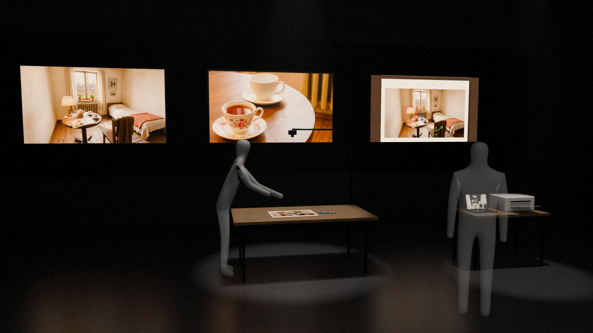

Who May Rewrite a Memory?
In development · installation · with Haitian Liu, Qiufeng Yi, Ziyue Yang
An installation for three screens and a table, about a fictional bedroom that visitors change by drawing on a print. Project page for the PACT Zollverein residencies, January–July 2027.